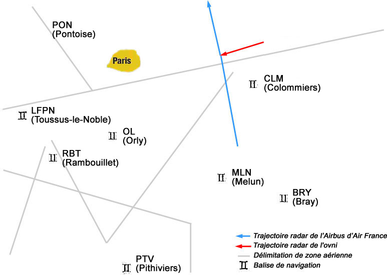

Le les 24 passagers de l'Airbus A320-111 piloté par le commandant Jean-Charles Duboc
s'envolent de Nice à destination de Londres.
Observation
Il est . Jean-Charles Duboc raconte :
Nous sommes en vol de croisière vers Coulommiers 48° 49' nord, Seine-et-Marne, à
11700 m d'altitude, par d'excellentes conditions métérologiques, avec une visibilité de 200 à 300 km 150 miles nautiques et une couverture nuageuse
d'alto cumulus recouvrant la région parisienne. Un stewart se trouve dans le poste de pilotage à cet instant.
C'est lui qui voit le 1er un objet dans le ciel. Il s'exclame : Un ballon-sonde ! Ma copilote Valérie Chaufour l'identifie, elle-aussi, dans un 1er temps, comme un ballon-sonde. Je suis le 3ᵉ
et le dernier à le voir. Par contre, je l'identifie comme étant un avion en virage à 45 ° d'inclinaison, en fait
avant qu'il n'ait les ailes à l'horizontale... L'excellente visibilité me permet ensuite d'estimer que cet objet
plutôt étrange est à une distance de 46 km 25 miles nautiques, à une altitude d'environ
10500 m il y a une couche d'altocumulus à 10000 m dans nos 10 h, c'est-à-dire au
nord-ouest, pratiquement à la verticale de Paris. Comme nous poursuivons notre route et que nous maintenons notre
cap, nous l'avons alors dépassé et je peux remarquer sa couleur rouge brunâtre, avec des bords légèrements flous,
et surtout une taille immense que j'estime à près de 1000 m de diamètre Duboc le jauge à la largeur de son pouce
pour une épaisseur de 100 m ! En effet, à une telle distance, un avion de ligne n'est qu'un point minuscule ! Cet
objet semble être un gigantesque disque, sans détails apparents, ni aile, ni gouvernes ou moteurs, que nous
pouvons voir sous plusieurs angles pendant près de .
La copilote, elle, voit la lentille se flouter puis évoluer vers une forme de "chevron". Alors que Duboc considère
que l'objet était quasi immobile et que son avion l'a dépassé (sans mentionner de changement de taille, toutefois),
elle considère qu'il se déplaçait à la vitesse de l'avion, restant toujours à peu près à la même position à gauche
de l'avion.
L'objet passe non loin se l'avion, en-dessous de lui.
Lorsque nous le laissons sur l'arrière gauche de notre appareil, je le vois soudain devenir transparent et
disparaître sans bouger. Nous contactons immédiatement le centre régional de contrôle de Reims pour savoir s'il dispose d'informations radar sur ce que nous avons vu.
Le contrôle aérien, qui a été en relation radio avec l'avion, leur demande de faire un rapport circonstancié sur
cette affaire, mais ils ne le feront pas :
Comme il me semblait difficile de témoigner sur un tel phénomène mystérieux et inexpliqué, j'ai refusé, dans un
premier temps, d'écrire un rapport sur cette étrange rencontre.
L'avion arrive à Londres plus tard.
Le CRNA Nord instruit le cas du vol AF 3532 (il n'en
aura traité que 3 depuis , bien que traitant 3000 mouvements par jour). Le CODA fait transmettre au pilote l'obligation de déposer un compte-rendu à la gendarmerie, mais Duboc ne le fait pas.
Enquêtes
SEPRA, Acte 1
Jean-Jacques Velasco, qui n'a pas entendu parler de l'affaire, se rend un jour au CCOA au sujet d'une autre affaire. Le capitaine chargé de cette dernière lui
communique le dossier en question et lui demande : Est-ce que vous êtes au courant de l'affaire du
? Velasco n'a pas été informé de cette affaire. Il la classe d'abord comme PAN C :
pas assez d'informations.
Paris-Match
Un journaliste, ancien pilote de l'armée de l'air, demande et obtient plus d'informations. Il parle de l'affaire
dans un article Biot, Jean-Pierre : "Depuis 1974,
l'état français met tous les moyens au service de Jean-Jacques Velasco pour étudier les phénomènes
d'ovnis", Paris-Match, 1997-02-13. A l'occasion, Duboc apprend que le CCOA a enregistré au même moment une piste radar initiée par le centre de
contrôle de Cinq-Mars-la-Pile correspondant au lieu et à l'heure au phénomène observé. Selon l'article, la
piste radar croiserait bien la trajectoire du vol AF 3532 et ne correspondrait à aucun plan de vol déposé :
C'est un article paru 3 ans après cet incident, , dans la revue Paris-Match,
qui m'obligera à sortir de mon mutisme et à rédiger un rapport, 8 jours plus tard, à l'intention de ma
hiérarchie et des autorités du SEPRA au CNES de Toulouse, pour corriger quelques erreurs et apporter des
précisions sur cette rencontre. Cet article m'a aussi appris que cet immense objet dans le ciel parisien a
laissé une signature radar enregistrée par les installations
militaires de Taverny.
Duboc s'estime relevé de son devoir de réserve et écrit à Vélasco, .
SEPRA, Acte 2
Pistes GA et AJ 653 d'après les enregistrements radar du CCA de Cinq-Mars-la-Pile (Reims) Vélasco 2004, p. 97

En débute l'enquête officielle du SEPRA. Hormis
le
stewart, 3ᵉ témoin, qui n'est pas retrouvé (la composition des équipages d'Air France n'est conservée que 3 ans),
Duboc et la copilote, Valérie XXXXXXXX, sont rencontrés et interrogés par téléphone à
plusieurs reprises, jusqu'au . Au cours de cette période et au fil des calculs, les données
relatives à la taille, distance vont évoluer.
D'abord la position, déclarée par Duboc à 10 h (30 ° devant) au début et 8 h (30 ° en arrière) à la fin de
l'observation, implique que les 2 positions de l'avion au début et à la fin de l'observation forment avec l'objet
un triangle aux angles de 60 °. L'avion de Duboc ayant parcouru 11 miles nautiques pendant l'observation (2 mn
maximum, à 330 nœuds), le triangle équilatéral ainsi formé devrait impliquer aussi une distance de 11 miles
nautiques avec l'objet, et non 25. Ceci amène à corriger le témoignage en envisageant que 1) l'angle de vision de
début et de fin de l'observation était plus faible ou 2) l'objet n'était pas immobile, mais en mouvement, à une
vitesse de 420 nœuds (ce qui ne colle pas avec la trace radar non identifiée à 180 km/h). Quoi qu'il en soit, ces
éléments donnent un poids supplémentaire au témoignage de la copilote, qui a vu l'objet constamment vers 9 h, et
donc en mouvement dans la direction opposée.
L'extrapolation de taille faite à partir de la dimension apparente donnée par Duboc est également revue à la
baisse. Indépendamment de la 1ère estimation de 1000 m donnée par Duboc, l'analyse de la dimension
apparente donnée (la moitié du diamètre de la Lune, soit 15 mn d'arc) indique un rapport de 0,004 entre taille et
distance, soit 200 m si l'objet était bien à 25 miles nautiques, près de 90 m s'il était à 11 miles nautiques, 40
cm s'il était à 100 m, etc.
Dans le même temps Velasco se rend au CCOA de Taverny pour superposer le témoignage avec des données radar. Les
pistes de l'avion et de l'écho non identifié sont examinées. Ce dernier a été détecté par le radar d'azimut, mais
pas celui d'altitude. Alors que l'avion évoluait à 330 nœuds (200 km/h, puis à 150 km/h puis à 0 km/h), et d'une
taille estimée entre 200 et 300 m (inférieure donc aux estimations de l'équipage). Seule l'altitude ne peut être
confirmée (non détectée) par le radar, qui a également détecté la "disparition" de l'objet (non détecté au "tour"
de suivant) au bout de . D'après Vélasco, les investigations menées au CCOA permettent d'exclure l'hypothèse du ballon-sonde.
Dans le cadre de l'enquête du SEPRA, Dominique Weinstein enregistre les rapports des 2 témoins :
Bonne visibilité au-dessus de la couche, 100miles nautiques à 150miles nautiques
Renseignement sur l'appareil
Type d'avion
Airbus A320-111 "Ville d'Amsterdam" immatriculation OF-GFKG, n° constructeur 021,
année de fabrication 1989
Compagnie
Air France
Numéro du vol
AF 3532
Origine du vol
Nice (France) 12:06 GMT
Destination du vol
Londres (UK)
Altitude
39000 pieds (FL390) (11 700 m)
Vitesse
VS=350 noeuds (650 km/h)
Cap ou route
332°
Airway ou OTS
Entre les balises BRY et CLM
Mode de Navigation
Pilote automatique engagé, Mode horizontal de navigation : LNAV
Effets électromagnétiques
Non
Contact radar
Non
Renseignement sur le phénomène
Nombre d'objet(s)
Un
Dimension
Grande taille
Forme
Objet à "géométrie variable" : disque, flèche (disque évoluant dans les 3 dimensions) /
contour net au début, puis flou et de nouveau net à la fin de l'observation
Couleur(s)
Sombre / brun
Altitude
FL 350 (35000 pieds) 10500 m
Vitesse
Trajectoire
Trajectoire apparemment rectiligne, parallèle à l'avion, puis une sorte de virage juste
avant la disparition
Position de l'objet
10 h
Distance Avion / Objet
25 à 50miles nautiques
Comportement
Objet en mouvement, changements de forme constant
COMETA
Par la suite le rapport est transmis au COMETA : J'ai été
entendu pendant près de par le groupe présidé
par le général Denis Letty. Après avoir discuté sur l'observation, nous avons conclu
que l'objet devait avoir environ 300 m de diamètre, raconte Duboc UFOCom 1999.
Contre-enquêtes
Eric Maillot, comme le rapport d'enquête, note que la trace radar montre un traffic
arrivant de la droite de l'appareil, alors que l'objet a été observé à gauche par les 3 témoins. La corrélation radar-visuelle serait donc remise en cause. Il
propose que Duboc n'a pas reconnu l'ovni comme étant probablement un avion
cargo Guppy.
À propos de cette incohérence radar, Duboc propose une hypothèse ad
hoc : J'ai pris connaissance de l'enregistrement radar du CODA. Il y a
une particularité très curieuse, car la trajectoire de l'ovni nous fait entrer quasiment en collision. La distance
minimale sur l'enregistrement est de moins de 1mile nautique, soit
de vol… Ce genre d'observation est classique en guerre électronique. Les aéronefs militaires
modernes sont furtifs, et en même temps capable de synthétiser une image virtuelle d'eux-mêmes en retardant l'écho
radar… Si un missile avait été tiré sur cet ovni, qui était au-dessus de Paris, ce serait l'A320 qui aurait
vraisemblablement reçu le missileUFOCom 1999.
Duboc, J.-C. : "J'ai vu l'ovni devenir transparent et disparaître", in OVNIS - Les preuves
scientifiques, VSD HS, août 1998, pp. 22-23.Maillot, Eric : "OVNI : Quand des scientifiques
trompent le public", Cercle Zététique — Critique du VSD 9808 H."OVNI : Les réponses des experts", Cercle
Zététique — Réponses aux critiques d'Eric Maillot."Vol Air France AF 3532 (28 janvier 1994)", Témoignage de pilotes Français, 1. 3, Rapport COMETA, 1999.Sturrock, Peter Andrew: "Preuves
radar", Rapport Pocantico, 1999, p. 101 — Traitant un cas évoqué lors de la conférence
de Pocantico.Y'a pas photo ! de Pascal Bataille et Laurent Fontaine
(TF1, 2000-05-15) — Où témoigne Duboc, conforté de l'avis de Jean-Jacques Vélasco.Velasco, J.-J. & Montigiani, Nicolas : "L'airbus, le radar et l'ovni - Les 3 cas français classés ovnis", Ovnis,
l'évidence, Carnot / Les documents, 22/04/2004, ISBN 2-84855-054-6 - EAN : 9782848550541, pp. 95-99.Reportage sur les
ovnis, France 2, 2007-03-22.